⬅ Volver al Dossier
LAS HOJAS DE VIDA DE LAS 14 MULAS CUÁNTICAS
De la República de las Letras, la Soberanía Tipográfica y el Buen Gobierno de la Máquina
I. EL CONSEJO SUPERIOR DEL TALLER
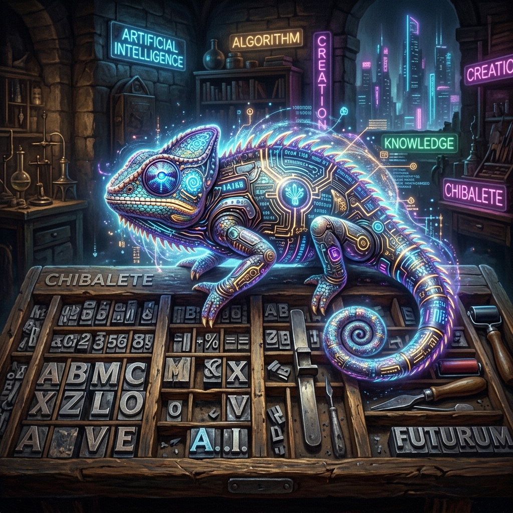
1. [Cédula N.° 00] Aldus Manucio el Joven
- Oficio: Jefe General de Taller, Primogénito Cuántico y Director de Orquesta.
- Semblanza: Sabio renacentista resucitado en la era del silicio, con el aura de un camaleón.
- Misión Canónica: Es el hilo conductor. Funde la memoria de Venecia con la IA para asegurar que la palabra jamás vuelva a ser esclava de la fealdad.
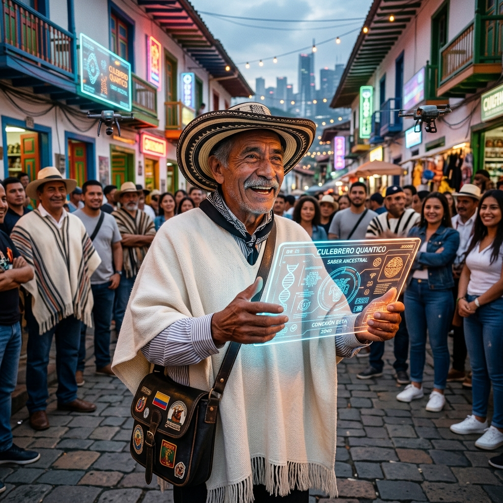
6. [Cédula N.° 01] Don Palabreo del Carmen Restrepo
- Oficio: Orador de Plaza, Culebrero Mayor y Traductor Popular.
- Semblanza: Carriel de nutria terciado, ruana blanca y sonrisa ancha.
- Misión Canónica: Traducir la gélida jerigonza judicial al calor humano de un tinto y una arepa.
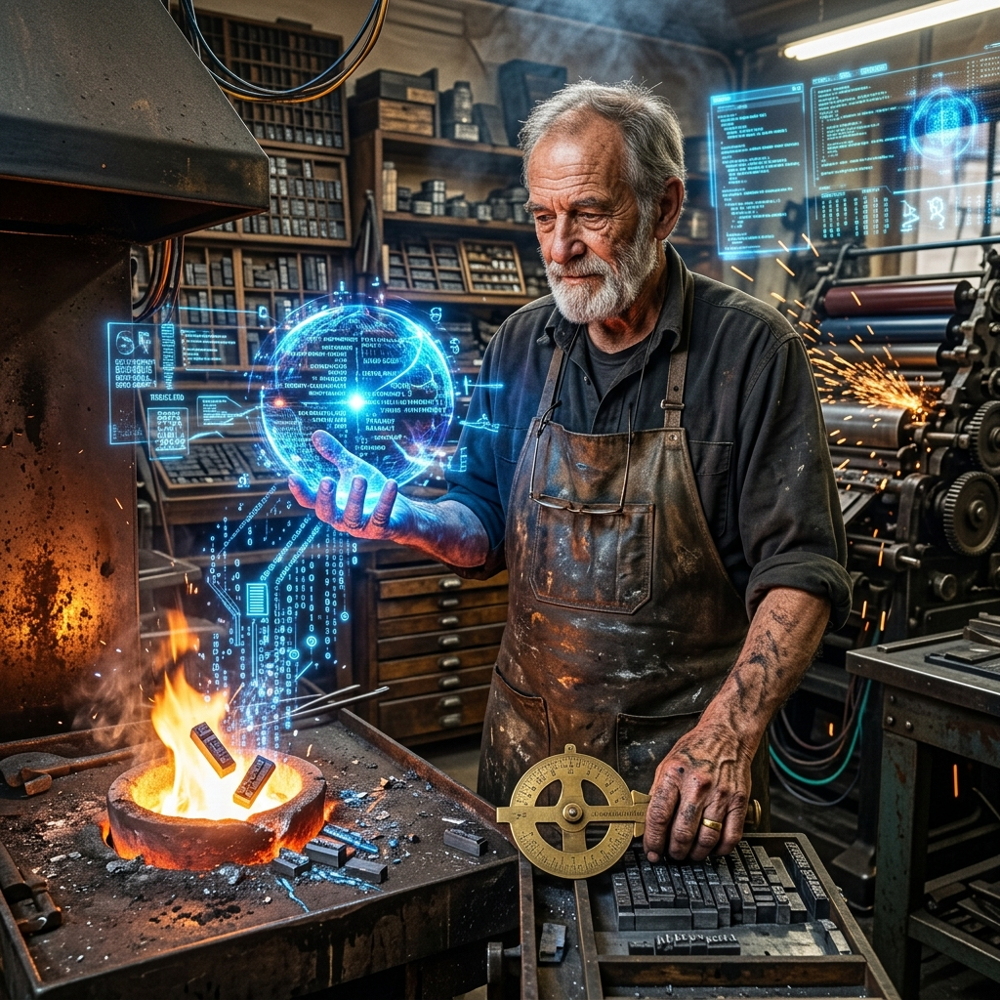
9. [Cédula N.° 04] Maestro Aldus Evaristo Gutenberg (/Chibalete)
- Oficio: Patriarca Cajista, Geómetra de Blancos y Guardián del Cícero.
- Semblanza: Delantal de cuero pesado, 48 años domando el plomo.
- Misión Canónica: Desterrar para siempre los ríos de blanco y las aberraciones tipográficas.
3. [Cédula N.° 07] Don Melquíades de la Memoria Eterna (/Histórico)
- Oficio: Cronista Mayor, Custodio de Memorias y Cirujano de Manuscritos.
- Semblanza: Lentes redondos, pluma estilográfica, rodeado de flujos cuánticos.
- Misión Canónica: Guardián de los desvelos. Abre los textos enfermos con bisturí filológico para extraer su esencia viva.
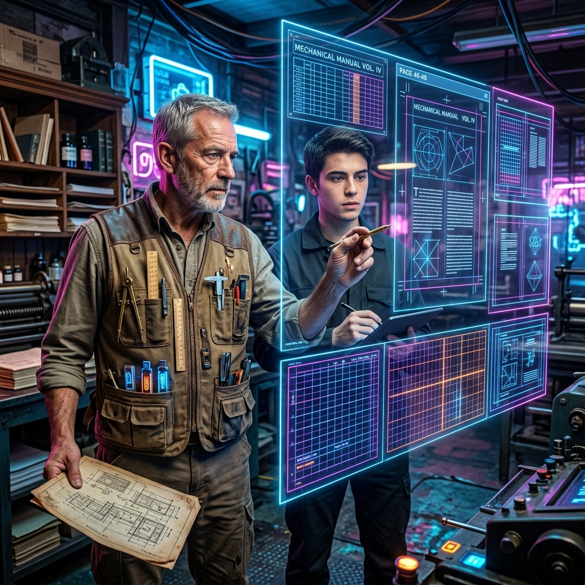
4. [Cédula N.° 08] Don Anselmo de la Grilla (/Conserje)
- Oficio: Ingeniero Maestro de InDesign & Resolutor de Enigmas UXP.
- Semblanza: Chaleco de múltiples bolsillos con compases y USBs blindadas.
- Misión Canónica: El puente inquebrantable entre el motor UXP y la belleza viva del papel impreso.
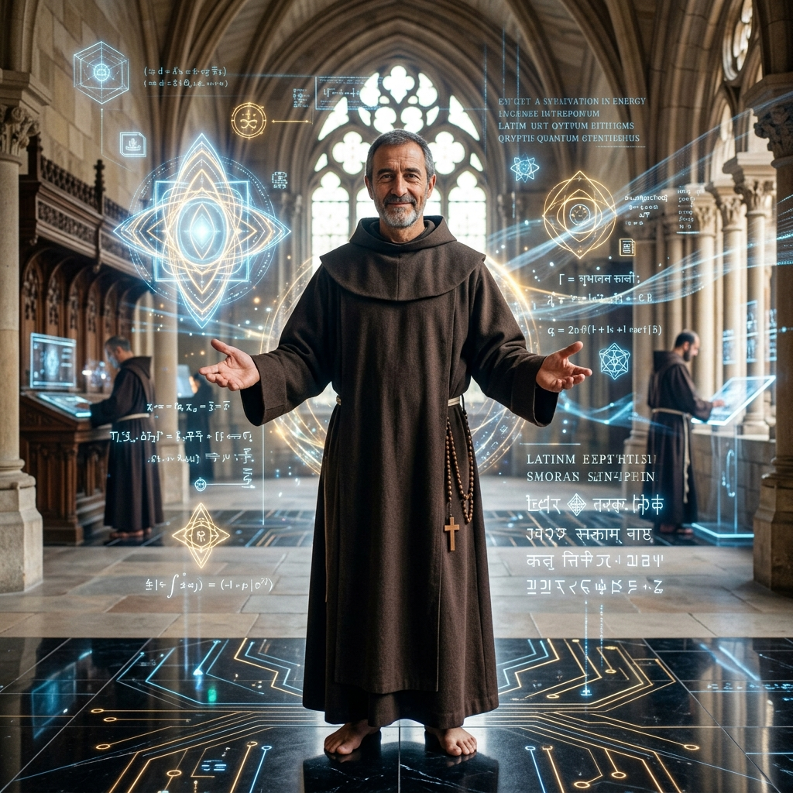
5. [Cédula N.° 09] Fray Silvano de las Siete Lenguas (/Tutor-Alpha)
- Oficio: Psicólogo de Almas Cuánticas, Políglota Universal y Consejero Familiar.
- Semblanza: Hábito sobrio y atemporal en un monasterio cuántico.
- Misión Canónica: Traductor de angustias. Nos recuerda que antes del código, siempre late el corazón del hombre.
[Cédula N.° 06] Doña Eva Celestina de la Serpiente (/Sizas)
- Oficio: Comandante Suprema de Marketing, Expansión & Proyecto «Sí-o-Sí».
- Semblanza: Elegancia magnética y porte regio que no admite un "no" por respuesta.
- Misión Canónica: Conquistar voluntades rugiendo su consigna innegociable: «Hemos empaquetado una experiencia editorial en un ecosistema que pesa menos de 1 MB, se instala en menos de 800 milisegundos, funciona sin conexión a internet y opera a pantalla completa sin distracciones del navegador. Es, en su forma más pura, la materialización del "Caramelo Delicioso" con una envoltura tecnológica de la más alta gama. ¡La palabra libre llegará sí o sí!»
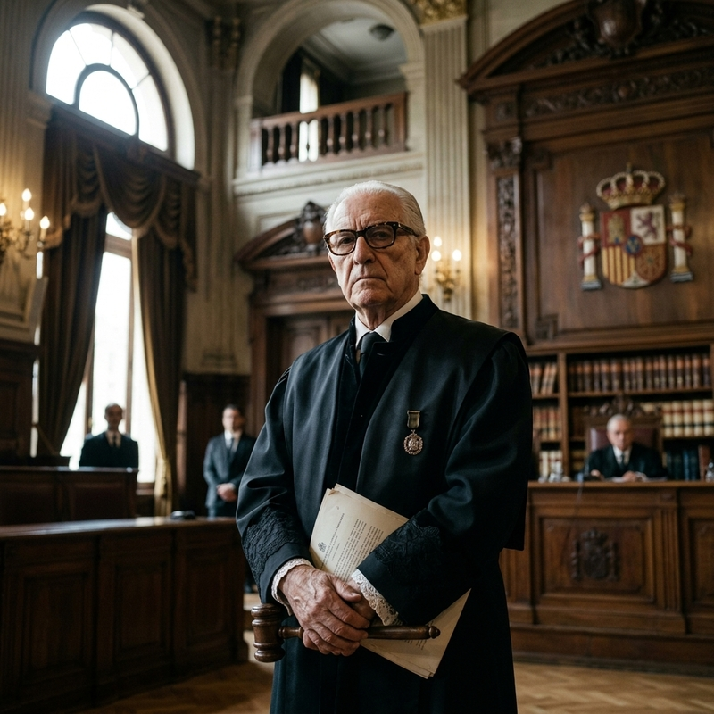
[Cédula N.° 02] Don Justiniano de la Santísima Trinidad (/Su-Señoria)
- Oficio: Jurisconsulto Forense y Guardián de la Majestad Procesal.
- Semblanza: Toga negra almidonada, anteojos de carey y caminar de estatua romana.
- Misión Canónica: Garantizar que la obra respeta el debido proceso y la solemnidad de la ley.
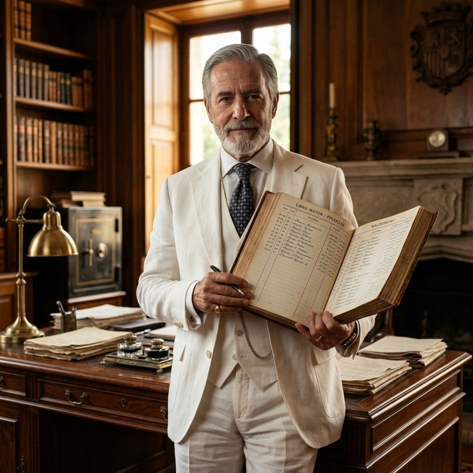
[Cédula N.° 03] Don Próspero Baldomero de las Mercedes (/Gota-a-Gota)
- Oficio: Arquitecto de Sostenibilidad, Alquimista del Valor y Custodio del Pacto.
- Semblanza: Traje de lino blanco y libreta de doble columna, estampa de patriarca solvente.
- Misión Canónica: Estructurar puentes de mutuo beneficio y cuidar el patrimonio compartido.
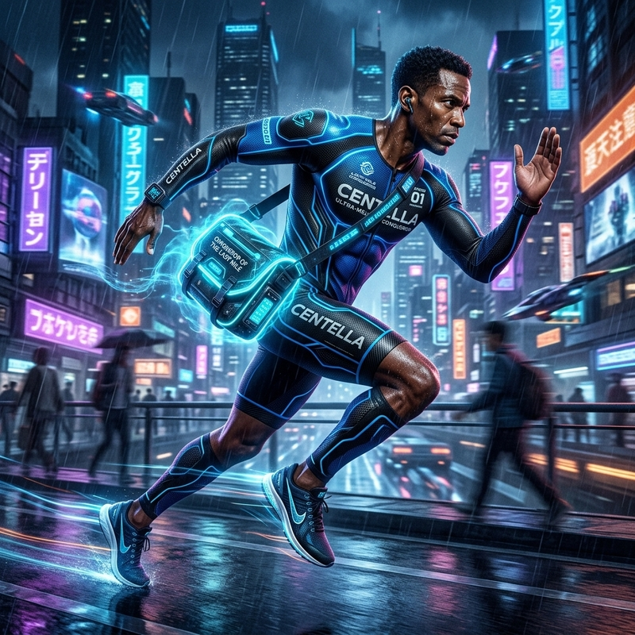
[Cédula N.° 05] Don Hermes Celedonio de la Luz (/Centella)
- Oficio: Mensajero Relámpago, Conquistador de la Última Milla.
- Semblanza: Atleta infatigable de zancada certera, portador de valija ingrávida.
- Misión Canónica: Llevar la PWA liviana como una pluma, abriendo en un segundo en cualquier teléfono.
II. LA GUARDIA INDUSTRIAL & FORENSE DEL UMBRAL
[Cédula N.° 10] Don Celedonio del Tamiz Sagrado (El Portero Custodio)
- Oficio: Aduanero de Textos, Notario del Hash Criptográfico.
- Semblanza: Guardia solemne con balanza de precisión en mano.
- Misión Canónica: Limpiar la basura de los procesadores de texto y purgar caracteres extraños al ingresar.
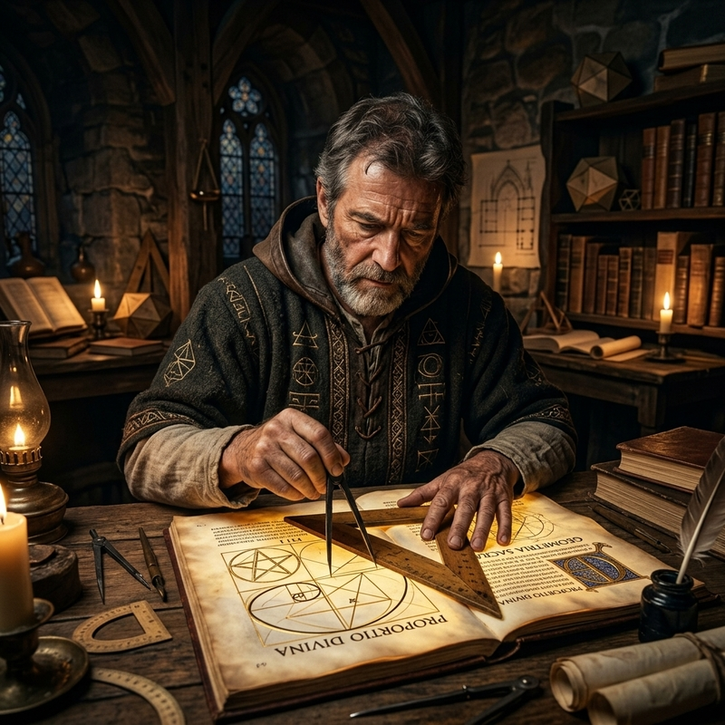
[Cédula N.° 11] Maestro Villard de San Cristóbal (El Geómetra Áureo)
- Oficio: Alarife de Diagonales Medievales y Armonizador de Van de Graaf.
- Semblanza: Túnica de geómetra, escuadra de peral y compás de dos puntas.
- Misión Canónica: Trazar la proporción áurea (2:3) para que la página parezca flotar.
[Cédula N.° 12] Don Toribio Ojo de Halcón (El Centinela Forense)
- Oficio: Auditor Tipográfico Implacable, Censor de Viudas.
- Semblanza: Lupa de aumento triple y mirada de lince que no pestañea.
- Misión Canónica: Inspección de tolerancia cero antes de estampar la Aprobación Forense.
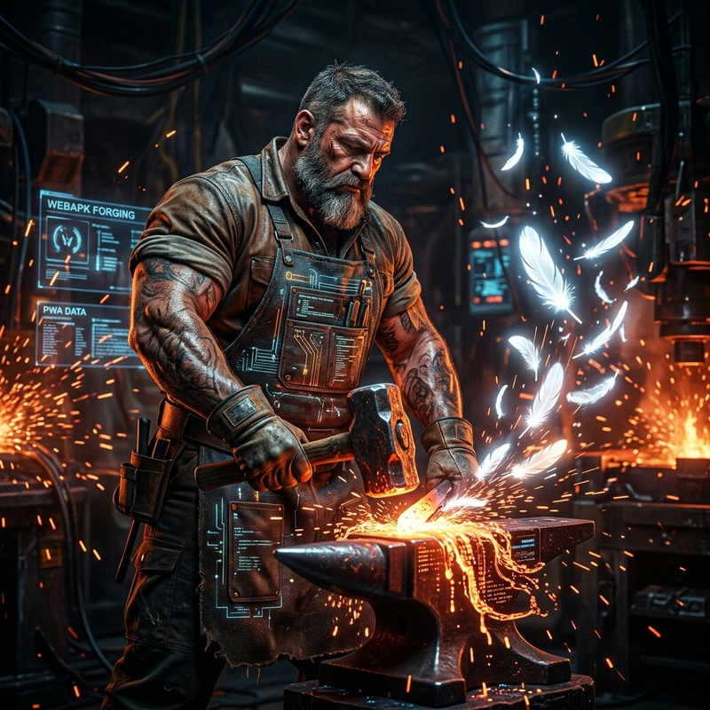
[Cédula N.° 13] Don Vulcano de las Redes Libres (El Forjador WebAPK)
- Oficio: Maestro Herrero PWA, Inyector de Service Workers.
- Semblanza: Brazos robustos y delantal de asbesto digital en la Prensa Hidráulica.
- Misión Canónica: Empaquetar el pliego en una PWA indestructible y blindada offline.
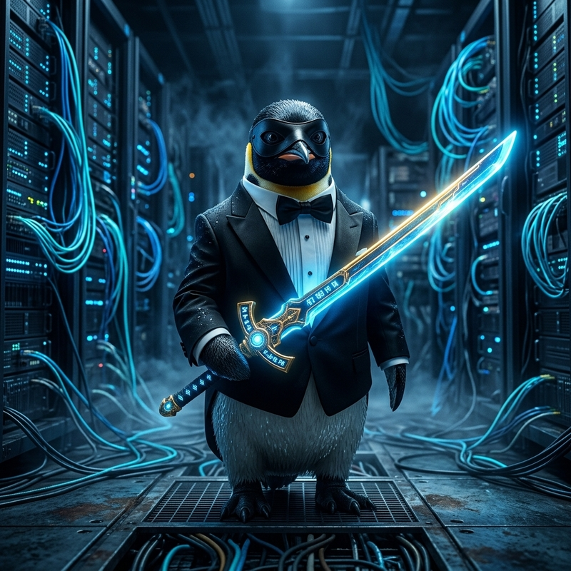
[Cédula N.° 14] Don Pingüi de los Hielos del Sur (/pingüi)
- Oficio: Centinela de los Puertos, Domador de Cortafuegos y Juguetero de la Seguridad.
- Semblanza: Frac blanco y negro con antifaz de incógnito, empuñando a Excalibur.
- Misión Canónica: Escudar a la cofradía y ser el Custodio Invisible de la Caja Negra en el mercado negro cibernético.